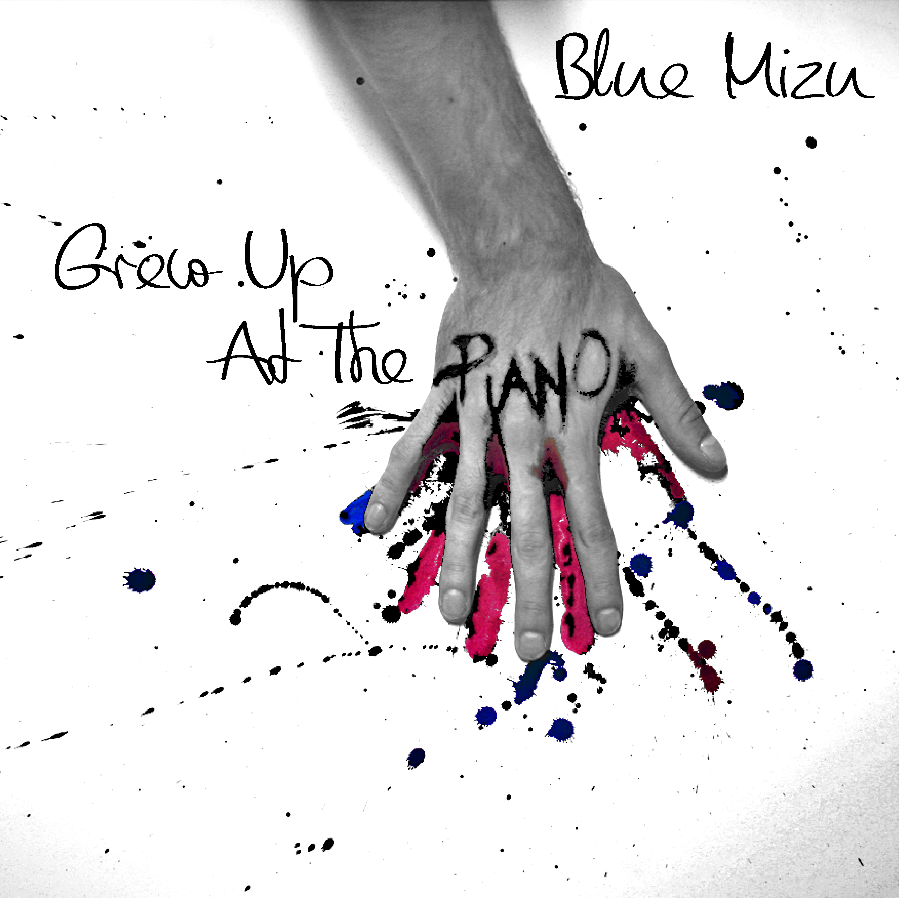
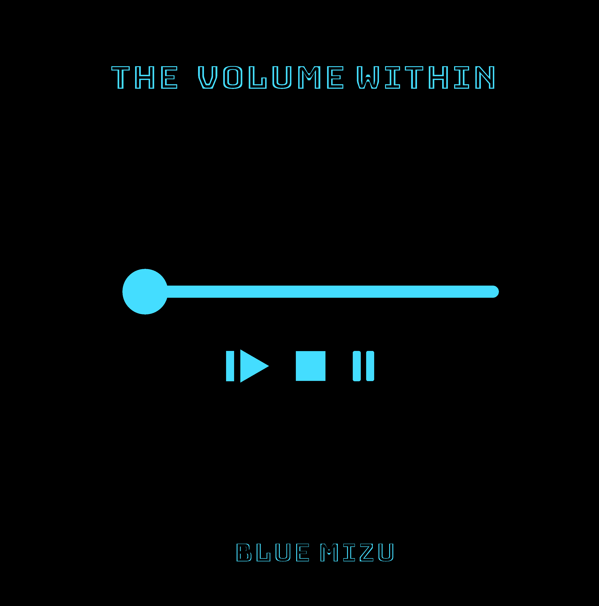

Blue Mizu is een 23 jarige Liquid Funk DJ,
geboren en getogen in de Londense
metropool. Heel zijn leven staat al sinds
kleins af aan in de betekenis van muziek.
Deze DJ vindt zijn roots in een swingende
underground jazzbar waar zijn vader de
piano bespeelde. Zo kreeg hij al heel snel
de kneepjes van het vak mee.Op latere
leeftijd ontdekte hij al feestend Drum ’n
Bass en was hij verkocht.
Hij zocht lang naar de juiste vibe om als
muzikant zijn twee grote liefdes samen te
voegen. Dit lukte hem uiteindelijk aardig en
hij mag zich met trots een rots in de Liquid
Funk scene noemen.


Liquid notes
After Blues
€28,99
€30,99
 Grew Up at the Piano
The Volume
Within
€24,99
€31,99